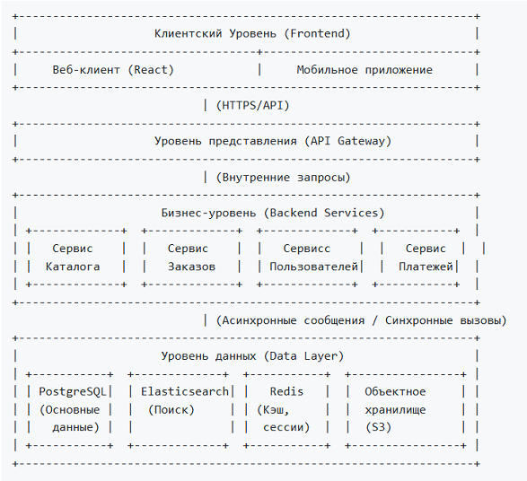
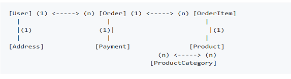

УП05. Разработка модели архитектуры информационной системы для интернет-магазина
1. Введение и Цели Архитектуры
Цель: Спроектировать масштабируемую, отказоустойчивую и безопасную архитектуру информационной системы интернет-магазина, которая эффективно поддерживает бизнес-процессы компании.
Ключевые архитектурные требования:
- Производительность: Быстрое время отклика (<200 мс) для ключевых операций (просмотр каталога, поиск, добавление в корзину).
- Масштабируемость: Возможность горизонтального масштабирования для обработки пиковых нагрузок (например, во время распродаж).
- Надежность: Минимизация времени простоя (целевой показатель доступности 99.9%).
- Безопасность: Защита конфиденциальных данных пользователей (PII) и платежной информации (PCI DSS).
- Поддерживаемость: Модульность системы для удобства разработки и внесения изменений.
2. Высокоуровневая архитектура (Logical View)
Система будет построена по многоуровневой (N-tier) архитектуре с четким разделением ответственности.

3. Детализация компонентов и моделей
3.1. Клиентский Уровень (Frontend)
- Модель: Single Page Application (SPA) на React.js.
- Компоненты:
- ProductCatalog: Компонент для отображения и фильтрации товаров.
- ShoppingCart: Управление корзиной.
- CheckoutWizard: Процесс оформления заказа.
- UserProfile: Личный кабинет пользователя.
- Взаимодействие: Общается с бэкендом исключительно через REST API и WebSocket (для уведомлений).
3.2. Уровень представления (API Gateway)
- Модель: Единая точка входа (например, на основе Nginx или специалированного решения как AWS API Gateway).
- Функции:
- Маршрутизация запросов к соответствующим бэкенд-сервисам.
- Аутентификация и авторизация (проверка JWT-токенов).
- Кэширование часто запрашиваемых данных (например, статический контент).
- Rate Limiting для защиты от DDoS-атак и злоупотреблений.
- Логирование входящих запросов.
3.3. Бизнес-уровень (Backend Services - Микросервисная архитектура)
Система декомпозирована на набор слабосвязанных сервисов. Каждый сервис управляет своей собственной моделью данных.
- Сервис Пользователей (User Service)
- Модель данных: User, Profile, Address.
- Ответственность: Регистрация, аутентификация, управление профилем, ACL (Access Control List).
- API: POST /auth/login, GET /users/me, PUT /users/address.
- Сервис Каталога (Catalog Service)
- Модель данных: Product, Category, Inventory, Review.
- Ответственность: Управление товарами, категориями, остатками, отзывами.
- API: GET /products, GET /products/{id}, GET /categories.
- Связь: Обновляет данные в Elasticsearch при изменении товара (асинхронно).
- Сервис Поиска (Search Service)
- Модель данных: Индекс в Elasticsearch на основе данных из Catalog Service.
- Ответственность: Полнотекстовый поиск, фасетная навигация, фильтрация.
- API: GET /search?q=query&filters=....
- Сервис Корзины (Cart Service)
- Модель данных: Cart, CartItem.
- Ответственность: Управление корзиной покупок.
- Хранилище: Redis (для высокой производительности и временного хранения).
- API: POST /cart/items, GET /cart, DELETE /cart/items/{id}.
- Сервис Заказов (Order Service)
- Модель данных: Order, OrderItem.
- Ответственность: Процесс оформления заказа (Checkout), управление статусами заказов.
- Связь: Синхронно взаимодействует с Payment Service и асинхронно с Notification Service и Inventory Service (для резервирования товара).
- Сервис Платежей (Payment Service)
- Модель данных: Payment, Transaction.
- Ответственность: Интеграция с внешними платежными шлюзами (Stripe, CloudPayments и т.д.).
- Связь: Принимает запрос на списание средств от Order Service, возвращает результат.
- Сервис Уведомлений (Notification Service)
- Модель данных: EmailTemplate, SMS.
- Ответственность: Отправка email (подтверждение заказа, сброс пароля) и SMS через очереди сообщений (RabbitMQ/Celery).
- Модель взаимодействия: Асинхронная, через брокер сообщений.
3.4. Уровень данных (Data Layer)
- PostgreSQL: Основное реляционное хранилище для структурированных данных (пользователи, заказы, товары). Выбор обоснован надежностью и поддержкой транзакций.
- Elasticsearch: Специализированное хранилище для поиска и фильтрации по каталогу товаров.
- Redis:
- Кэширование результатов запросов к каталогу и пользователям.
- Хранение сессий и корзин.
- Брокер сообщений для фоновых задач (в связке с Celery).
- Объектное хранилище (S3-совместимое): Хранение изображений товаров, статических файлов.
4. Модель данных (Высокоуровневая ER-диаграмма)

Ключевые сущности:
- User: id, email, password_hash, created_at
- Product: id, name, description, price, sku, category_id
- Order: id, user_id, status, total_amount, created_at
- OrderItem: id, order_id, product_id, quantity, price
- Category: id, name, slug, parent_id
5. Модель развертывания (Deployment View)
- Контейнеризация: Все сервисы упакованы в Docker-контейнеры.
- Оркестрация: Используется Kubernetes (k8s) или Docker Swarm для автоматического развертывания, масштабирования и управления контейнерами.
- Балансировщик нагрузки: Nginx Ingress Controller в k8s или AWS Application Load Balancer для распределения входящего трафика.
- CI/CD: Автоматизированный пайплайн (например, GitLab CI/CD) для сборки, тестирования и развертывания.
6. Обоснование ключевых архитектурных решений
- Микросервисы против Монолита: Выбор в пользу микросервисов обоснован необходимостью независимого масштабирования (например, сервис поиска нагружен больше, чем сервис пользователей) и независимыми циклами разработки.
- Асинхронная коммуникация: Использование брокера сообщений (Redis/RabbitMQ) для уведомлений и тяжелых задач развязывает сервисы и повышает отказоустойчивость. Если сервис уведомлений временно недоступен, заказы все равно могут создаваться.
- Разделение БД для чтения и записи (CQRS): Каталог оптимизирован для чтения через Elasticsearch, в то время как основная база (PostgreSQL) служит источником истины для операций записи. Это значительно повышает производительность поиска.
- Кэширование на всех уровнях: Redis (кэш сессий и корзин), кэш в API Gateway (статика), кэш на фронтенде (CDN для изображений) — все это снижает нагрузку на бэкенд и БД.
Заключение
Предложенная модель архитектуры представляет собой современное, robust-решение для интернет-магазина. Она построена на принципах микросервисной архитектуры, что обеспечивает высокую степень масштабируемости, отказоустойчивости и поддерживаемости. Четкое разделение на уровни и сервисы позволяет командам разработки работать параллельно и безопасно вносить изменения в отдельные части системы, не затрагивая ее целиком.